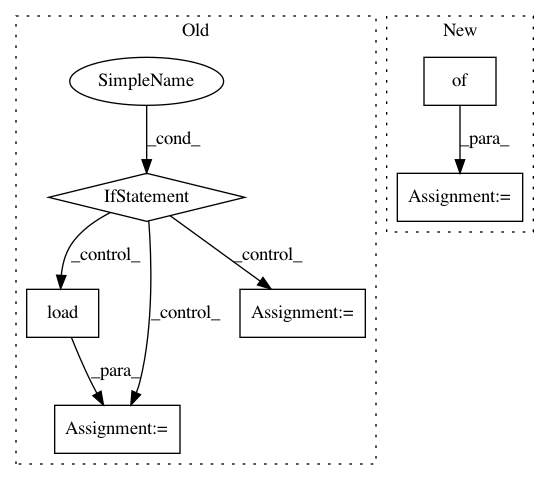

0f7823cb6a27b5d7dfab56f06a6601bf2957594b,skorch/net.py,NeuralNet,__setstate__,#NeuralNet#Any#,1320
Before Change
with tempfile.SpooledTemporaryFile() as f:
f.write(dump)
f.seek(0)
if (
uses_cuda(state["device"]) and
not torch.cuda.is_available()
):
disable_cuda = True
val = torch.load(
f, map_location=lambda storage, loc: storage)
else:
val = torch.load(f)
state[key] = val
if disable_cuda:
warnings.warn(
"Model configured to use CUDA but no CUDA devices "
After Change
not torch.cuda.is_available())
load_kwargs = {}
if disable_cuda:
load_kwargs = {"map_location": lambda store, loc: store}
with tempfile.SpooledTemporaryFile() as f:
f.write(state["cuda_dependent_attributes_"])
f.seek(0)
In pattern: SUPERPATTERN
Frequency: 3
Non-data size: 6
Instances
Project Name: dnouri/skorch
Commit Name: 0f7823cb6a27b5d7dfab56f06a6601bf2957594b
Time: 2018-08-23
Author: stsievert@users.noreply.github.com
File Name: skorch/net.py
Class Name: NeuralNet
Method Name: __setstate__
Project Name: philipperemy/keras-tcn
Commit Name: 0cfe82c6beb9a28a5ff7da81b86fa0e93c388f14
Time: 2019-11-20
Author: premy@cogent.co.jp
File Name: tasks/save_reload_model.py
Class Name:
Method Name:
Project Name: pymc-devs/pymc3
Commit Name: 6592704f791a83cdcca6e6c5b880eccf45fd94ed
Time: 2007-03-22
Author: david.huard@15d7aa0b-6f1a-0410-991a-d59f85d14984
File Name: PyMC2/database/pickle.py
Class Name: Database
Method Name: __init__